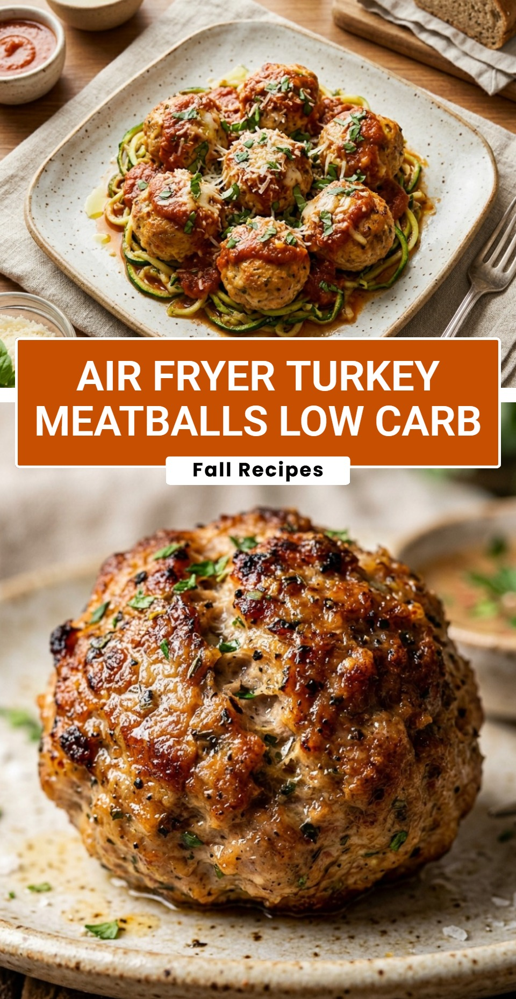

Air Fryer Turkey Meatballs Low Carb
October 18, 2026

Finding a healthy, protein-packed meal that actually tastes great can be a challenge, but these low carb air fryer turkey meatballs hit the spot every single time. By swapping traditional breadcrumbs for keto-friendly alternatives and using the air fryer, you get a juicy interior and a perfectly browned exterior without the need for excess oil. They are perfect for busy weeknights when you want something nutritious but don’t have hours to spend in the kitchen.
Recipe Information
Prep Time: 10 minutes
Cook Time: 12 minutes
Total Time: 22 minutes
Servings: 4
Difficulty Level: Easy
Nutrition Information
Calories per serving: 215 kcal
Protein: 26g
Carbohydrates: 3g
Fat: 11g
Fiber: 1g
Sugar: 0g
Sodium: 480mg